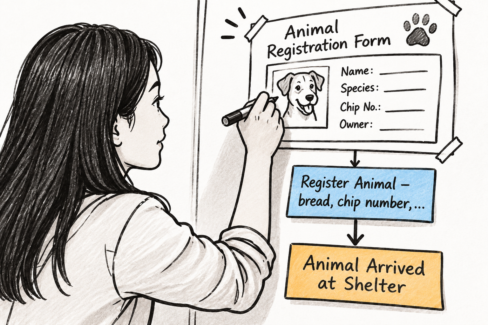

10 From Events To Screens

When the team returns from lunch, the wall still looks the same as they left it. The orange event notes stretch across it, with a few pink Hot Spots interrupting the timeline. Three hours of discussion have produced a somewhat coherent picture of the shelter’s work. At least, that’s how it feels.
Leon waits until everyone has settled around the wall. Well, settled might be the wrong word. Nobody is sitting. The chairs and tables are still pushed against the walls, and the team is getting used to spending the day on its feet.
“All right. This morning we focused on understanding what happens in the shelter. We have a timeline now, and I think we have a much better picture of the domain than we had this morning.”
He pauses and looks at Sarah.
“For the afternoon, I’d like us to look at things from another perspective. Instead of following what happens, let’s think about how people would interact with the software. What do they need to see? What information do they work with? And how does that relate to the events on our wall?”
Leon explains that they want to map the user journey and the screens that support it. They will start with Animal Intake, their focus for the afternoon, rather than trying to design the entire application.
Kim steps closer to the wall. She has been listening, but now she seems to be in her element.
“I suggest we start with some really rough sketches. We don’t need proper UI designs. Just the main areas of a screen, some labels, maybe a few boxes. Big shapes, thick markers. That’s why they’re called Fat Marker Sketches.”
She picks up a broad marker and holds it up.
“The idea is to make the structure visible without getting distracted by details. We can discuss what belongs on a screen before anyone starts worrying about colors, spacing, or whether a button has the right border radius.”
Mina smiles. She knows exactly how easily a discussion about a button can consume half an hour.
But before they start sketching screens for the shelter, Kim suggests a small exercise.
10.1 How do you make toast?
“Let’s try something first. Everyone gets a sheet of paper. Draw how to make toast. Don’t discuss it with anyone. Just draw the steps as you imagine them.”
Chris looks at her.
“Toast? As in bread and toaster?”
“Exactly. Nothing complicated. You have five minutes.”
There is a brief silence, followed by the sound of markers moving across paper.
Leon draws a sequence of boxes connected by arrows. Get bread. Put bread in toaster. Toast bread. Take toast out. Add butter. Chris starts with a picture of a toaster and bread, then adds a hand reaching for the lever. Mina draws a neat sequence, including a step for choosing the desired browning level. Kim’s sketch includes a person, a toaster, a plate, and a small decision about whether the bread is already toasted enough.
Sarah is just as busy with her marker. Her drawing starts with a slice of bread and a toaster, but she adds a few steps the others haven’t thought about. She draws a cupboard where she gets the bread, then a plate, and finally a jar of jam. Apparently, toast at Sarah’s place involves a little more than butter.
When they put the sheets next to each other, the differences are immediately visible.
“Wait. Leon, you don’t even have a plate.”
“I didn’t think the plate was part of making toast.”
“But where do you put it after taking it out of the toaster?”
“In my hand, presumably.”
Chris laughs and points at Mina’s sketch.
“And she has a browning-level decision. I just push the lever down and hope for the best.”
Kim looks at the five sketches side by side. They all understand what making toast means. They probably make toast regularly. Yet they have drawn different processes, included different steps, and made different assumptions about what matters.
“That’s the point. We all heard the same task, but we didn’t imagine exactly the same thing. Some things were obvious to one person and not to another. And we only noticed because we put the sketches next to each other.”
Leon looks back at the wall of orange notes.
“So perhaps we shouldn’t assume that we all imagine the same thing when we say Animal Intake.”
“Exactly. And that’s why I wanted everyone to sketch first. We can compare what we have and talk about the differences. We don’t need to agree on a design before we’ve understood what people actually need.”
The exercise takes barely ten minutes, but it changes the atmosphere. The team has a shared reference for the next step, and nobody feels the need to produce a beautiful design. In fact, the rougher the sketches, the easier it is to talk about them.
Kim takes a large sheet of paper and draws a rough rectangle. She adds a few larger areas inside it, using the broad marker to make the structure visible.
10.2 Sketching the first screens
“This is all we’re after. A sketch that helps us talk. We can add details later.”
They turn to the Animal Intake timeline. The orange events are still arranged in the order they established in the morning. Now they begin to think about the screens a shelter employee might use along the way.
The first idea is an Occupancy Board. It gives staff an overview of the animals currently in the shelter and helps them see where things stand. Kim draws a broad screen with several distinct areas. Chris suggests making the animals easy to distinguish at a glance. Mina asks what information someone needs when looking at the board during a busy day. Sarah contributes examples from the shelter’s daily routines, explaining what staff usually want to know when checking the current situation.
They do not try to settle every detail. The purpose is to make the screen tangible enough that they can discuss it.
Next comes the Animal Registration Form. Kim sketches a rough form with a few obvious sections. Leon looks at the orange notes around the arrival and registration events and asks which parts of the process the form should support. Sarah helps them distinguish information that staff collect when an animal arrives from information they may only learn later.
The sketches begin to accumulate. Each large white sheet represents a screen or a meaningful part of the user journey. The team places them above the corresponding events on the timeline, keeping the sequence they established in the morning.
As the discussion progresses, the wall starts to change. It is no longer just a timeline of things that happen. There are now screens above it, connected to the events they help bring about.
Kim steps back to look at the growing arrangement.
“I think we’re getting somewhere. But the screens are still just boxes. We need to understand what information each one displays and what information people enter.”
Leon nods. That’s the next step. For every screen, they want to identify the properties that need to be visible. And where the user enters information, they also want to capture the data collected by the interface.
They introduce two more colors of sticky notes. Green for the properties displayed on a screen, blue for the data collected through the UI. These go below the corresponding screen, with the orange events remaining underneath. The arrangement gives them a vertical slice: the screen, the information it displays or collects, and the event associated with it.
10.3 What sits behind a screen
At first, this sounds straightforward. They have the screens. They know the events. Surely, filling in the information between them is mostly a matter of listing fields.
But the first few questions already suggest otherwise.
The first screen they tackle in more detail is the Occupancy Board.
At a glance, it seems simple enough. A board showing the animals currently staying at the shelter, perhaps grouped by their location. The team starts listing the information someone might need when looking at it: the animal’s name, species, perhaps a photo, its current location, and some indication of its status.
Chris suggests that they could make the board interactive. A staff member could select an animal and move it to another kennel. Mina immediately asks what happens if the destination kennel is already occupied.
That question sends them back to Sarah.
Sarah explains that the shelter has different kinds of accommodation for different animals. You cannot simply put any animal into any available space. The team starts asking how staff know which kennels are suitable, how they know whether a kennel is available, and how they keep track of animals that are expected to move out.
They add more green sticky notes beneath the Occupancy Board. But the more information they list, the less the screen looks like a self-contained feature.
Someone asks whether the board should also show kennels that are currently occupied but expected to become available soon. That leads to another question: how does the shelter know when a kennel will become free? Is there a planned departure date? What happens when an animal is moved to foster care? And who is responsible for updating the information?
The discussion moves away from the screen itself. They are no longer talking only about what a user should see. They are trying to understand how the shelter manages its accommodation.
Leon looks at the growing collection of notes beneath the sketch. The Occupancy Board still looks like one screen, but the information behind it seems to require quite a bit more than a handful of fields.
“Hang on. I thought we were designing an overview screen. Now we’re discussing how the shelter manages its kennels.”
“Because the screen needs that information. We can’t decide what to show without understanding where it comes from.”
Mina studies the notes.
“And we can’t make the board useful if the information isn’t maintained somewhere. If a kennel becomes available, someone needs to record that. If an animal is expected to leave next week, we need to know that too.”
Chris is already thinking about possible interactions.
“We could have a separate kennel management screen. Maybe a calendar view for reservations, and then …”
Leon raises a hand, smiling.
“Let’s not design the whole application just yet. First, let’s understand what Sarah and the shelter staff actually need.”
Sarah continues explaining how they work today. Some of the information is recorded in a spreadsheet on a shared drive, some is kept in people’s heads, and some depends on staff knowing the current situation. The team realizes that the Occupancy Board is only the visible part of a much larger capability.
They add a few more notes and mark questions they cannot answer yet. The original sketch has not become useless. Quite the opposite. It has helped them discover what they need to understand before they can design it properly.
And this is where the afternoon starts to feel different from the morning.
10.4 The iceberg beneath the board
During the Big Picture Event Storming, the team moved quickly. Events gave them a way to explore a broad domain without having to understand every detail. They could follow the story, add what happened, and keep moving. Three hours later, they had a timeline that felt complete.
Now they are looking at one screen and discovering how much sits behind it.
The Occupancy Board is a good example because nobody questioned its existence in the morning. Everyone could imagine a board showing the animals in the shelter. It sounded so obvious that there was no reason to stop and investigate it.
But the moment they ask what information it needs, the picture changes. Kennels have types and capacities. They can be occupied, become available, or be reserved for an animal expected to arrive. Animals move between locations, and staff need to know not only where an animal is now but where it might be next week.
What looked like a screen is turning into a domain of its own: shelter accommodation management.
The team has not designed that module, and they certainly have not agreed on all its rules. They have simply discovered that the apparently simple Occupancy Board depends on a much larger understanding of how the shelter manages its space.
Leon looks at the wall again. The morning’s timeline is still there, but now the space above it is filling with screens and the space below those screens with information. The model is getting wider and deeper at the same time.
The iceberg is becoming visible. And they have only started with one screen.
He slowly starts to realize what Event Modeling is about, and how it might indeed be the missing ingredient for Agentic Engineering.